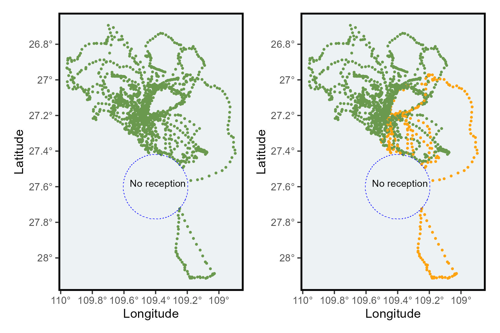

library(sula)Complete or incomplete trips
r
ggplot2
sula
Y2024
biologging
Identify trips with large gaps and classify the trip as complete or incomplete.
Intro
When tracking animals, there may be times when they enter areas with no reception.
If a large part of a trip takes place in such areas, you should consider whether to include this data in your calculations.
For instance, long gaps could lead to an underestimation of the actual distance traveled by the animal.
In this post, I’ll walk you through the steps I used to determine whether trips are complete or incomplete.
This post has three parts:
- Create a gap
- Calculate gaps
- Identify if our trips are complete or incomplete
Data
For the exercises, test data is from masked boobies.
To access the data you have to install the package sula: devtools::install_github(“MiriamLL/sula”)
Use the function select from tidyverse to keep the columns ID, latitude, longitude, date, time, and trip number.
library(tidyverse)
Data_1original<-GPS_preparado %>% select(IDs,Latitude,Longitude,DateGMT,TimeGMT,trip_number)Creating a gap
In this part we would eliminate some locations to create an artificial gap
library(sf)Select a location with “low reception” and remove all the locations to create the gaps
This_area<-data.frame(Longitude=-109.4,Latitude=-27.6)
create_buffer<-function(central_point=central_point, buffer_km=buffer_km){
central_spatial<- sp::SpatialPoints(cbind(central_point$Longitude,central_point$Latitude))
sp::proj4string(central_spatial)= sp::CRS("+init=epsg:4326")
central_spatial <- sp::spTransform(central_spatial, sp::CRS("+init=epsg:4326"))
central_spatial<-sf::st_as_sf(central_spatial)
buffer_dist<-buffer_km*1000
central_buffer<-sf::st_buffer(central_spatial, buffer_dist)
return(central_buffer)
}
This_buffer<-create_buffer(central_point=This_area,buffer_km=20)
Data_2spatial <- Data_1original
sp::coordinates(Data_2spatial) <- ~Longitude + Latitude
sp::proj4string(Data_2spatial) = sp::CRS("+init=epsg:4326")
Data_2spatial <-sf::st_as_sf(Data_2spatial)
Data_3creategap<-sapply(sf::st_intersects(Data_2spatial ,This_buffer), function(z) if (length(z)==0) NA_integer_ else z[1])
Data_1original$trip <- as.numeric(Data_3creategap)
Data_4withgap <- Data_1original %>%
filter(is.na(trip)==TRUE)Plot the area with low reception
Plot_locations<-ggplot()+
geom_point(data = Data_4withgap,aes(x=Longitude,y = Latitude),color="#6a994e",size=0.5)+
scale_x_continuous(labels = function(x) paste0(-x, '\u00B0')) +
scale_y_continuous(labels = function(x) paste0(-x, '\u00B0')) +
xlab('Longitude')+ylab('Latitude')+
theme(
panel.background = element_rect(fill = '#edf2f4'),
panel.grid.major = element_blank(),
panel.grid.minor = element_blank(),legend.position='none',
panel.border = element_rect(colour = "black", fill=NA, size=1.5))+
geom_sf(data=This_buffer,colour='blue', fill='transparent', linetype='dashed')+
geom_text(data=This_area, aes(x=Longitude,y=Latitude,label="No reception"),hjust=+0.46, vjust=0, size=3)
Plot_locationsCalculate gaps
A column in the format POSIXct is needed for this example.
Data_4withgap <- Data_4withgap %>%
mutate(dt= as.POSIXct(strptime(paste0(DateGMT," ",TimeGMT), format="%d/%m/%Y %H:%M:%S")))Checking gaps in time on one individual trip.
Data_5oneindividual<-Data_4withgap %>% filter(IDs=='GPS09') %>% filter(trip_number=='trip_2')Data_5oneindividual<-Data_5oneindividual %>%
mutate(times_lag=lag(dt))%>%
mutate(time_dif=as.numeric(difftime(dt, times_lag, units = "mins")))%>%
mutate(time_dif_mins = round(time_dif,2))This trip has a large gap: 4 - 57.70.
range(Data_5oneindividual$time_dif_mins,na.rm=TRUE)Create a loop to calculate gaps separated by individuals and trips.
calculate_gaps<-function (this_data = this_data,
column_datetime = column_datetime,
column_separator = column_separator){
# to standardize the column names
this_data$column_separator<- this_data[[column_separator]]
this_data$column_datetime <- this_data[[column_datetime]]
trips_list <- split(this_data, this_data$column_separator)
gaps_list <- list()
for (i in seq_along(trips_list)) {
trip_df <- trips_list[[i]]
trip_df<-trip_df %>%
mutate(times_lag=lag(dt))%>%
mutate(time_dif=as.numeric(difftime(dt, times_lag, units = "mins")))%>%
mutate(time_dif_mins = round(time_dif,2))
gaps_list[[i]] <- trip_df}
gaps_df <- do.call("rbind", gaps_list)
return(gaps_df)
}For this, would help to have an unique ID, which helps separate the individual and their trips.
Data_5uniqueIds <- Data_4withgap %>%
mutate(unique_id=paste0(IDs,'_',trip_number))To run the function, provide the data frame, the information for separating, and the name of the column where the date and time are provided.
Data_6uniqueIds<-calculate_gaps(this_data=Data_5uniqueIds,
column_separator='unique_id',
column_datetime='dt')Complete or incomplete
By using the function summarise, we can see which trips have large gaps.
Data_7gaps<-Data_6uniqueIds %>%
group_by(unique_id)%>%
summarise(min_gap=min(time_dif_mins,na.rm = TRUE),
max_gap=max(time_dif_mins,na.rm = TRUE))Based on the gaps during the trips, the trips could be classified as complete or incomplete.
For example, here an incomplete trip would be any trip that had a gap of more than 30 minutes.
Data_7gaps <- Data_7gaps%>%
mutate(trip_class = case_when(max_gap <= 30 ~ 'Complete',
TRUE ~ 'Incomplete'))Use this table to identify those trips that were incomplete.
unique_incomplete<-unique((subset(Data_7gaps,Data_7gaps$trip_class=='Incomplete')$unique_id))Use the information above, to add the classification on the tracking locations.
Data_8gaps <- Data_6uniqueIds %>%
mutate(trip_class = case_when(unique_id %in% unique_incomplete ~ 'Incomplete',
TRUE ~ 'Complete'))Plot incomplete trips.
Plot_trips<-ggplot()+
geom_point(data = Data_8gaps,aes(x=Longitude,y = Latitude,color=trip_class),size=0.5)+
scale_x_continuous(labels = function(x) paste0(-x, '\u00B0')) +
scale_y_continuous(labels = function(x) paste0(-x, '\u00B0')) +
xlab('Longitude')+ylab('Latitude')+
theme(
panel.background = element_rect(fill = '#edf2f4'),
panel.grid.major = element_blank(),
panel.grid.minor = element_blank(),legend.position='none',
panel.border = element_rect(colour = "black", fill=NA, size=1.5)
)+
geom_sf(data=This_buffer,colour='blue', fill='transparent', linetype='dashed')+
geom_text(data=This_area, aes(x=Longitude,y=Latitude,label="No reception"),hjust=+0.46, vjust=0, size=3)+
theme(
legend.background = element_rect(colour = "transparent", fill = "transparent"),
legend.position.inside = c(0.22,0.15))+
scale_colour_manual(name='trip',values = c("#6a994e", "#fca311"))+
guides(color = guide_legend(override.aes = list(size = 2)))
Plot_trips
Further reading
Another way to check for gaps, using only time in this post.